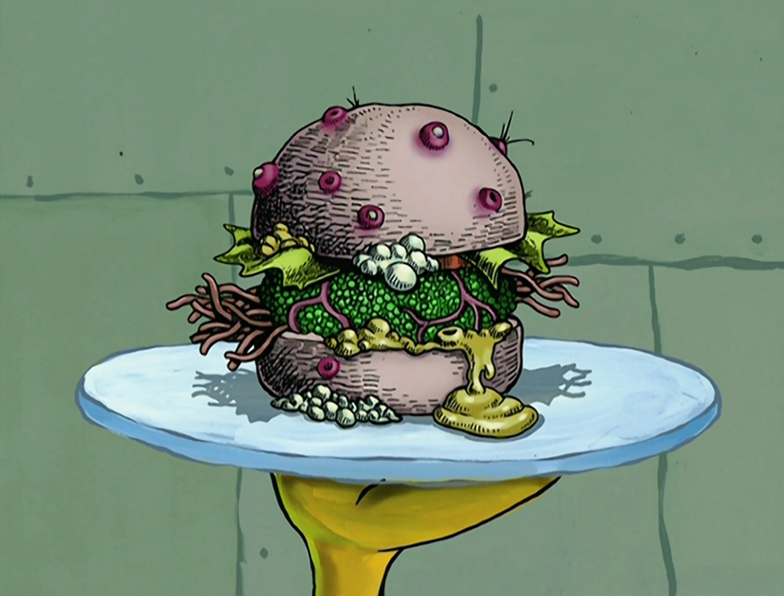

Hamburgerler Burgers

Description
A delicious burger with fresh ingredients, guaranteed to impress anyone with a serious taste pallet
- 1 large egg
- 1/2 teaspoon salt
- 1/2 teaspoon ground black pepper
- 1 pound ground beef
- 1/2 cup fine dry bread crumbs
- 1/2 head of lettuce
- 1 tomato
Steps
- Preheat an outdoor grill for high heat and lightly oil grate.
- Whisk together egg, salt, and pepper in a medium bowl. Add ground beef and bread crumbs and mix with your hands or a fork until well blended. Form into four 3/4-inch-thick patties.
- Place patties on the preheated grill. Cover and cook 6 to 8 minutes per side, or to desired doneness. An instant-read thermometer inserted into the center should read at least 160 degrees F (70 degrees C).